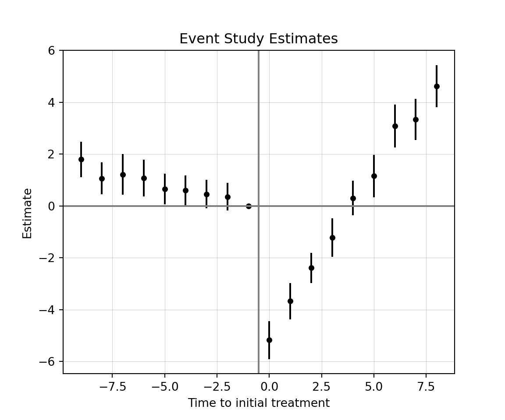

pip install -U pyfixestpyfixest
Python package for TWFE, 2-stage DiD (Gardner 2021), and interaction-weighted (Sun and Abraham 2021).
pyfixest is a port of the fixest package for python, with slighty different syntax and offerings. pyfixest can implement the standard TWFE estimator for difference-in-differences. Documentation can be found here.
Install the package by inputting the following into the terminal:
sample code
Start by loading packages and the data:
import pyfixest as pf
import pandas as pd
import numpy as np
import matplotlib.pyplot as plt
df = pd.read_csv('df.csv')We can use the pf.feols() function to run the TWFE estimation for the ATT:
mod = pf.feols(
fml = "outcome ~ treat + covar | id + time",
data = df,
vcov = {"CRV1": "id"}, # change "id", do not touch "CRV1"
)
mod.summary()#> ###
#>
#> Estimation: OLS
#> Dep. var.: outcome, Fixed effects: id+time
#> Inference: CRV1
#> Observations: 950
#>
#> | Coefficient | Estimate | Std. Error | t value | Pr(>|t|) | 2.5% | 97.5% |
#> |:--------------|-----------:|-------------:|----------:|-----------:|-------:|--------:|
#> | treat | -3.683 | 0.361 | -10.200 | 0.000 | -4.400 | -2.966 |
#> | covar | 1.018 | 0.032 | 31.414 | 0.000 | 0.954 | 1.083 |
#> ---
#> RMSE: 1.609 R2: 0.725 R2 Within: 0.623Dynamic treatment effects for a TWFE event study can be calculated as follows:
mod = pf.feols(
fml = "outcome ~ i(rel_time, group, ref = -1) + covar | id + time",
data = df,
vcov = {"CRV1": "id"}, # change "id", do not touch "CRV1"
)The iplot option within pyfixest is flawed, so we will have to manually plot them with matplotlib.
# save the results into tidy
res = mod.tidy()
# drop covariates from result dataframe (if required)
res = res.drop('covar')
# select needed columns
res = res[['Estimate', '2.5%', '97.5%']]
# no t=-1 estimate, so we will need to add it
new = pd.DataFrame({
'Estimate': [0.00],
'2.5%': [0.00],
'97.5%': [0.00]
})
pre = res.iloc[:8] # split dataframe so only pre-treat
post = res.iloc[8:] # split dataframe so only post-treat
plot_df = pd.concat([pre, new, post], ignore_index = True) # stick t=-1 between pre and post
# rel_time variable
rel_time = np.arange(-9, 9, dtype=np.int64)
plot_df['rel_time'] = rel_time # add to dataframe
# plotting time
x = plot_df['rel_time']
y = plot_df['Estimate']
yerr = [y - plot_df['2.5%'], plot_df['97.5%'] - y] # err distances
fig, ax = plt.subplots()
ax.scatter(x, y, color = "black", s = 15) # s is for size
ax.errorbar(x, y, yerr = yerr, fmt = 'none', color = 'black', ecolor = 'black', capsize = 0)
ax.axvline(x = -0.5, color = "gray")
ax.axhline(y = 0, color = "gray")
ax.grid(True, linewidth = 0.3, alpha = 0.5, color = "gray")
ax.set_title('Event Study Estimates')
ax.set_xlabel('Time to initial treatment')
ax.set_ylabel('Estimate')
plt.show()